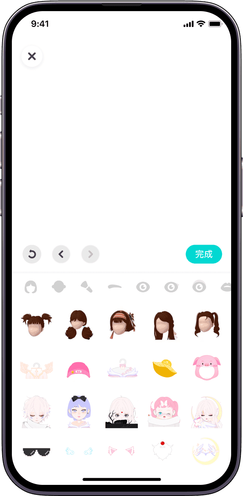

Soul 到底值不值得掏钱？我把超级星人这笔账算透了
作为一个认真掂量过值不值的 Soul 老用户，我把超级星人会员、Soul 币消费、限量 Avatar 的账一条条拆开——轻度用、主力用、重度用，各自的花钱边界在哪？
它到底值不值得掏钱？——开头先把话撂这
我用 Soul 快两年了。星球换过一次（第一次没认真做灵魂测试，随手选的，后来重测一次才归到真正匹配的星球），Avatar 捏了三版，Soulmate 星星攒了十二颗，Soul 币花了大概……算了不说具体数字，反正够买两杯奶茶。
在这期间我反复被同一个问题戳中：到底要不要为 Soul 花钱？ 不买会不会亏了什么？买了会不会又掉进什么订阅陷阱？
这篇就是给你算这笔账。我不讲好话也不讲坏话，就按「什么东西免费、什么东西要钱、要钱的东西值不值」这个骨架一条条剥。
定价拆解：免费版给什么，付费版多什么
从官方下载装完到现在，我对照Soul官网的产品定位，先给你画张功能边界图——免费用户能摸到 Soul 的百分之多少？
免费版的完整清单：星球匹配（算法给你推同星球同引力签的人）、广场浏览和发帖（文字、图片、Poll 投票全免费）、基础捏脸（上百种发型+五官+头饰，组合够用）、Soulmate 星星（聊够天数自动点亮）、一对一聊天、Party 房间旁听。
付费版（超级星人）解锁的东西：匿名度提升（把你的星球标签从主页隐藏）、发帖优先推荐（算法给你更多曝光）、限量款 Avatar（迪士尼米奇米妮联名、复古 Y2K 这些，基础捏脸里没有）、更多的灵魂测试重测次数、以及——最重要的——去广告。
然后是 Soul 币。Soul 币是用来买单次消耗品的：限量 Avatar 皮肤、礼物、Poll 置顶、帖子推广位。超级星人是订阅制，Soul 币是按次买，两套付费逻辑并存。
这里有个我必须吐槽的设计：Soul 币的价格阶梯挺鸡贼——小额充值（比如 6 块钱 60 币）比例最低，充得越多送得越多，但你永远会觉得「还差一点就能凑齐那款限量 Avatar 了」，于是小额充值反复发生，累计下来反而比一次性充大包还贵。
算账：三类人各自的花钱边界
第一类：轻度用（每周刷两三次，聊一两个对象）
免费版完全够，一分钱不用花。
你想想，轻度用户的核心需求是什么——找人聊聊天、偶尔逛下广场、不被打扰。免费版的星球匹配和 Soulmate 机制已经能覆盖这个需求。你不会频繁发帖要曝光，也不会急着抢限量 Avatar，广告嘛，刷两三次的话忽略就是了。
唯一可能让轻度用户动心的付费点是「匿名度提升」——如果你特别在意不被熟人认出来，那花这钱算你有特殊需求。但说实话，Soul 本身就是虚拟形象不看脸，重名重脸的概率不低，这个需求其实没想象中迫切。
这类人的结论：免费版兜住 95% 的场景，付费属于想多了。
第二类：主力用（每天刷，活跃发帖，认真经营 Soulmate 关系）
值得考虑超级星人，但 Soul 币要节制。
主力用的场景是你每天打开 Soul，发帖、评论、回私信、养 Soulmate 星星。这时候免费版的体验开始有明显短板了：发帖没推荐，广场里像石沉大海；广告插在信息流中间打断阅读；Soulmate 星星满了之后（据说上限是 30 颗），再养就只能靠新匹配。
超级星人给的两个核心提升——发帖优先推荐和去广告——对主力用户来说是真·时间省下来了。你发的 Poll 投票会被更多人看见，评论区不再被付费推广帖淹没，广场浏览不再被 15 秒广告打断。按订阅周期算下来，每天不到一顿早餐的钱，买的是干净流畅的使用体验。
但 Soul 币要忍住。限量 Avatar 确实好看，但它不影响你的匹配成功率、不影响你的 Soulmate 星星数量、不影响你的聊天体验。它就是个面子工程。你要是捏脸水平够，基础捏脸的千种组合里完全能捏出独一无二的形象，具体参数可以翻一下Soul文档。我见过有人靠基础捏脸捏出被官方转发的 Avatar，没花一分钱。
这类人的结论：订阅可以开，币要省。
第三类：重度用（频繁发帖、追限量 Avatar、追求曝光）
闭眼付钱，但做好预算。
重度用户的核心诉求是——在 Soul 的注意力经济里占一席之地。你每天发好几帖，追每一个限量款 Avatar，希望自己的帖子被推到广场前排，希望更多人给你点赞评论。
这个场景下，超级星人的发帖优先推荐和 Soul 币的帖子推广位是直接影响你社交效果的。限量 Avatar 在重度用户圈里是社交货币——迪士尼联名款出来那天我亲眼看见有人凌晨三点蹲刷新，发完朋友圈晒了一整屏。
但重度用户最容易踩的坑就是小额充值反复发生。我自己就栽过一次——看着差 30 币凑齐限量款，充 6 块；又差 20 币，再充 6 块；最后算下来这一个皮肤花了快 40，而如果一次性充大包的话只要 28。建议你给自己设一个月度预算，比如每月 50，花完就停，下个月再说。
这类人的结论：预算内无脑付，预算外硬扛。
替代方案：不付钱能活吗？
能活，但体验打折。
同类免费社交产品当然有——小红书的兴趣社群、豆瓣小组的垂直圈、B 站的同好区，都能找到聊得来的人。但 Soul 的核心优势是星球匹配 + 虚拟形象 + Soulmate 星星这一整套情感锚点，其他产品没这套机制。你在小红书认识的同好不会点亮一颗星星，在豆瓣小组聊得来的人不会每天找你打卡。
降低使用频率也是一种路。如果你只是偶尔想找人聊两句，控制在每周三次以内，免费版的体验完全没问题。但如果你已经形成每天打开的习惯，降低频率说起来容易做起来难——我试过连续三天不刷，最后手还是痒了。
结论：三秒对号入座
最后给你一张决策卡，自己对照：
- 闭眼付：每天必刷 Soul、认真经营社交关系、有发帖曝光需求——直接开超级星人，每月预算里留一笔就行。
- 再等等：每周刷三四次、偶尔发帖、Soulmate 星星不到十颗——先免费用着，等哪天免费版的短板真的让你烦了再考虑付费。
- 永远不用付：每周刷两三次、只聊天不发帖、对 Avatar 没执念——免费版已经够好，掏钱纯属浪费。
还有一个我必须提的坑：代充绝对碰不得。淘宝闲鱼上那些低价充 Soul 币的，背后是盗刷信用卡和洗钱，官方风控一抓一个准——轻则封号 30 天，重则永久封禁，充的币全部清零，钱也追不回来。充值只走 App 内购，别贪那点便宜。

我的 Soulmate 星星已经十二颗了，Avatar 还是捏的第一版没换，超级星人订阅开到了这个月底——到时候我大概率会续，但 Soul 币我已经学会忍了。有些东西不是买不起，是买了才发现不需要。
这套资料在三个仓库都能拿到，GitHub 是主仓库随时更新，Gitee 和 GitCode 镜像同步，国内访问选哪个都行。